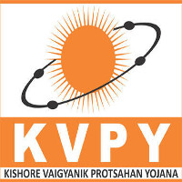

Qualified National Talent Search Examination (NTSE) Stage-II in 2017
conducted by NCERT, New Delhi for students of class X

Selected for Kishore Vaigyanik Protsahan Yojana (KVPY) Scholarship
in 2019 offered by Indian Institute of Science, Bangalore in Class XII and secured
an all-India rank of 970